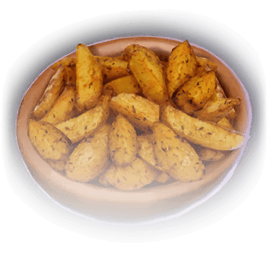

Fried Rat Sweker

"Fried until crisp and covered with a mixture of garlic, lime and peppers."
Frites
"Thick-cut chips fried in beef tallow and covered in herbs.""

"Fried until crisp and covered with a mixture of garlic, lime and peppers."
"Thick-cut chips fried in beef tallow and covered in herbs.""
"A soft, hot potato filled with garlicky butter and herbs."
Crusty on the outside and soft on the inside, this bread fills your mouth with a rich, slighty sweer taste.
A caramelised, fatty honey glaze drips from the webbed feet.
A rich mix of vegetables, simmered for hours and topped with a piece of juicy tofu.